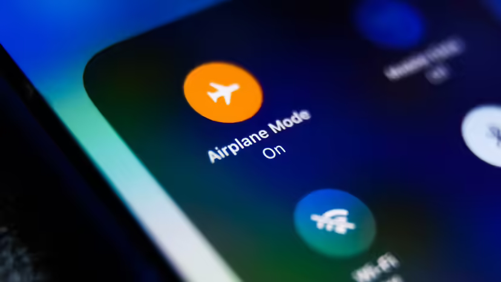

Do you really need "Airplane Mode" turned on during a flight?
 A phone in airplane mode.It's what most people do, board the plane, settle in your seat, and turn on airplane mode. But is it really necessary?
Cell phones are designed to send out signals strong enough to reach great distances. According to the United States Federal Communications Commission (FCC), the radio frequency emitted by these and other electronic devices could interfere with cell tower networks on the ground.
If you don't switch into airplane mode then your cell phone or cellular-enabled tablet will keep attempting to make connections with every cell tower on the ground that the airplane passes.
Not only will the signals cause interference with airplane navigation, but the effort it takes your cell phone to keep scanning and tower hopping at fly-by speeds will also drain your battery and still not maintain a constant signal.
While not turning on airplane mode is usually harmless when you're the only one that has it off, when everyone on the plane has their cell phones on, it can cause a lot of interference. This is why the flight attendants will usually ask you to turn off your cell phone or put it on airplane mode before takeoff. Listen to the flight attendants and turn on airplane mode, and thank your pilots for keeping you safe.